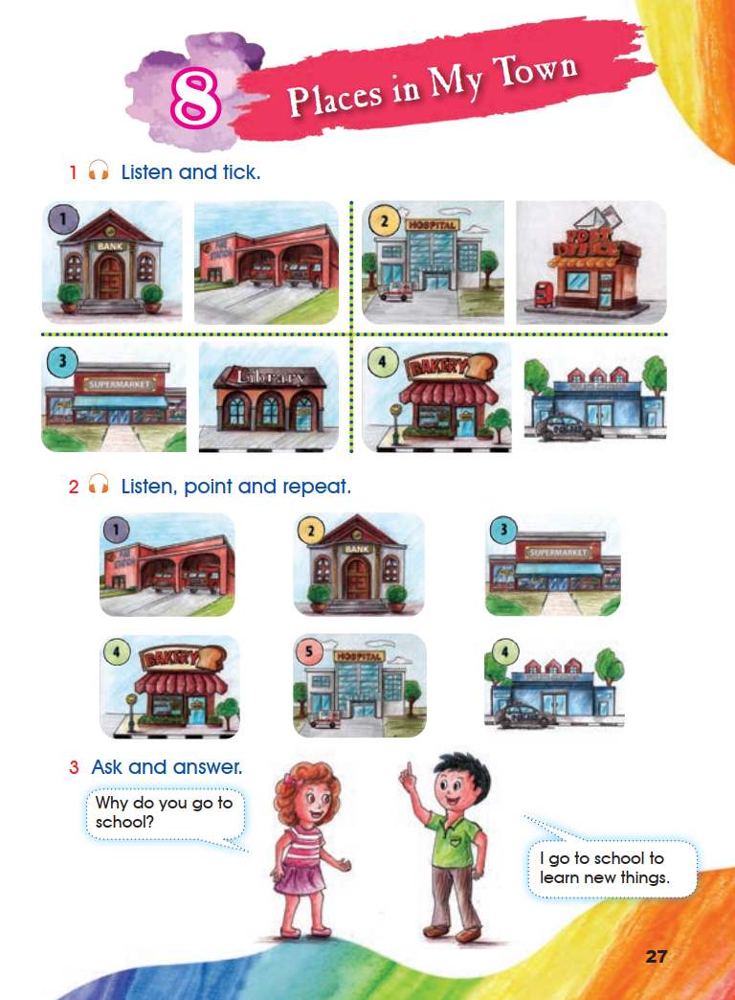
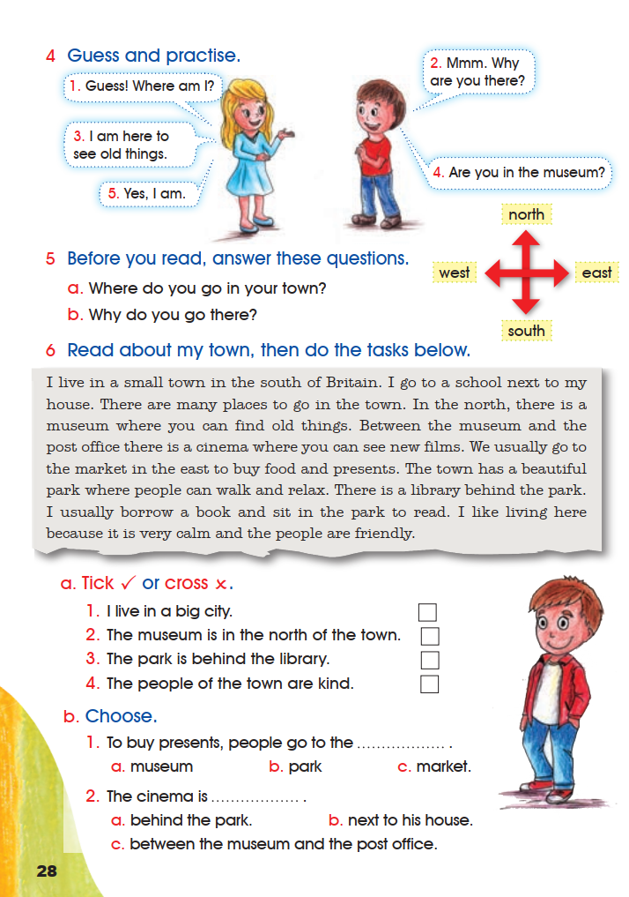
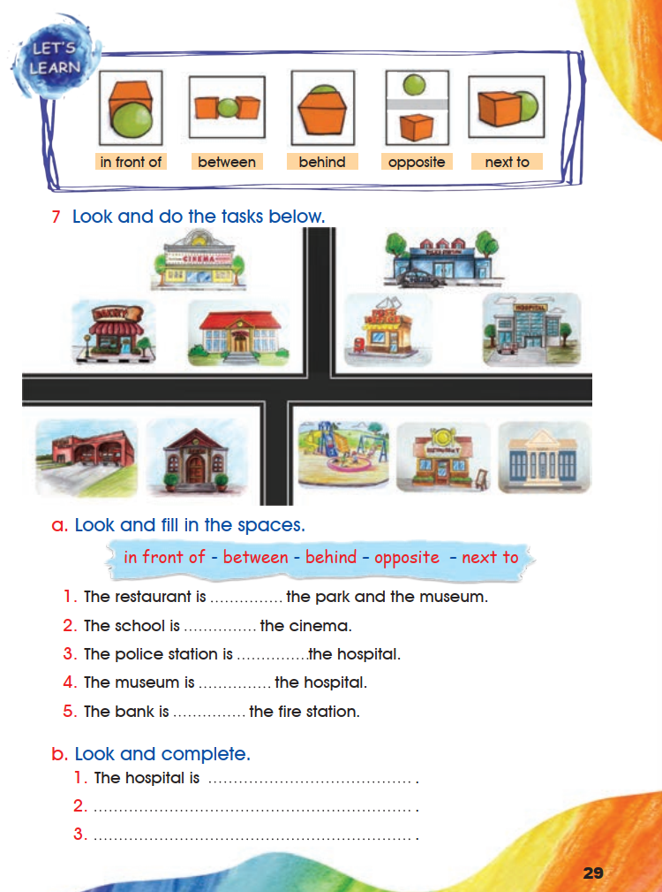

Pupil’s Book · Places in My Town
Every printed exercise is shown beside its original byte-preserved scan and an accessible transcription. No audio was supplied, so listening tasks stay unavailable for verification; inferred and illustrative answers are labelled.
Pupil’s Book page 27 · place pictures and school-purpose model

Accessible transcription
8 Places in My Town 1 Listen and tick. 1. bank / post office 2. hospital / restaurant 3. supermarket / library 4. bakery / school 2 Listen, point and repeat. 1 post office 2 bank 3 supermarket 4 bakery 5 hospital 4 school 3 Ask and answer. Why do you go to school? I go to school to learn new things. 27
Source-faithful study notes
Printed language: eight place names and the printed question-and-answer model are quoted above. Source defect: the second printed `4` is on School. It is disclosed and not corrected or keyed.
Audio-dependent: exercises 1 and 2 cannot be verified without the recording.
Pupil’s Book page 28 · compass and town passage

Accessible transcription
4 Guess and practise. 1. Guess! Where am I? 2. Mmm. Why are you there? 3. I am here to see old things. 4. Are you in the museum? 5. Yes, I am. north / west / east / south 5 Before you read, answer these questions. a. Where do you go in your town? b. Why do you go there? 6 Read about my town, then do the tasks below. I live in a small town in the south of Britain. I go to a school next to my house. There are many places to go in the town. In the north, there is a museum where you can find old things. Between the museum and the post office there is a cinema where you can see new films. We usually go to the market to buy presents. The town has a beautiful park where people can walk and relax. There is a library behind the park. I usually borrow a book and sit in the park to read. I like living here because it is very calm and the people are friendly. a. Tick ✓ or cross ×. 1. I live in a big city. 2. The museum is in the north of the town. 3. The park is behind the library. 4. The people of the town are kind. b. Choose. 1. To buy presents, people go to the ... museum / park / market. 2. The cinema is ... behind the park / next to his house / between the museum and the post office. 28
Source-faithful study notes
Source-derived inference (not a printed key): 6a = ×, ✓, ×, ✓; 6b = 1 market, 2 between the museum and the post office. The two questions in exercise 5 are open and are not scored.
Pupil’s Book page 29 · prepositions and town map

Accessible transcription
Let’s learn in front of / between / behind / opposite / next to 7 Look and do the tasks below. a. Look and fill in the spaces. in front of - between - behind - opposite - next to 1. The restaurant is ............... the park and the museum. 2. The school is ............... the cinema. 3. The police station is ............... the hospital. 4. The museum is ............... the hospital. 5. The bank is ............... the fire station. b. Look and complete. 1. The hospital is ........................................ 2. ........................................ 3. ........................................ 29
Source-faithful study notes
Exercise 7a · Fill the map sentences
Image-derived inference from the printed map; not a printed answer key.
Show inferred map answers (comparison only)
Exercise 7b · Write three map sentences
Open-ended: illustrative examples only; answers vary.